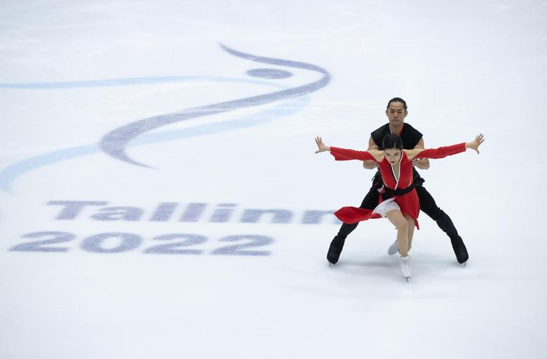

Tallinnas algasid täna iluuisutamise nelja kontinendi meistrivõistlused, kus selgitatakse välja Ameerika, Aasia, Aafrika ja Okeaania parimad. Esimesel võistluspäeval selgitati parimad naiste lühikavas, jäätantsu rütmitantsus ja paarissõidu lühikavas.
Nelja kontinendi meistrivõistlused toimuvad alates 1999. aastast, kuid esmakordselt jagatakse medalid Euroopas. Taseme poolest on võistlus võrdväärne Euroopa meistrivõistlustega.
Tegemist on koroonast tingitult väga erandliku juhtumiga, kus ükski nelja kontinendi riikidest ei olnud nii lühikese ajaga võimelised võistlust korraldama, sest Hiinas Tianjin'is toimuma pidanud võistlus annulleeriti ametlikult 13. septembril, teatas uisuliit.
Jäätantsu rütmitantsus näitas parimat minekut USA paar Carolin Green / Michael Parsons, kes sai oma kava eest kokku 80,62 punkti. Teine oli Jaapani paar Kana Muramoto / Daisuke Takahashi (72,43) ning paremuselt kolmanda punktisaagi kogusid ameeriklased Christina Carreira / Anthony Ponomarenko (69,35).
Paarissõidu lühikava võitis samuti USA paar Audrey Lu / Misha Mitrofanov 68,35 silmaga. Neile järgnesid kanadalased Evelyn Walsh / Trennt Michaud (65,45) ning koondisekaaslased Emily Chan / Spencer Akira Howe (64,47).
Naiste lühikava võistluse väikese kuldmedali teenis jaapanlanna Mai Mihara 72,62 punktiga. Teise ja kolmanda koha jagasid omavahel korealannad Haein Lee (69,97) ja Yelim Kim (68,93).
Tagasi